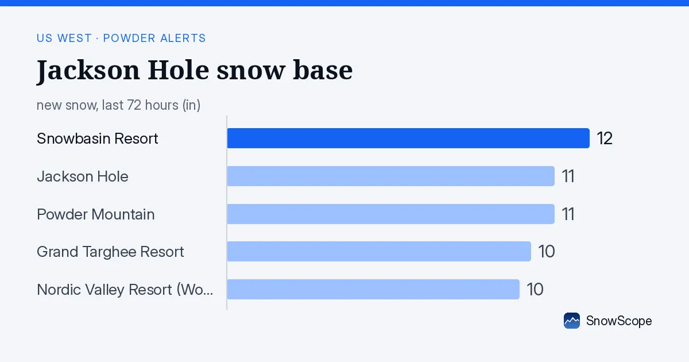

Jackson Hole snow base: 11 in of new snow in three days (US West, 22 November)
Jackson Hole snow base – A fresh round of snow has reshaped the picture in the US West, though not every resort shared in it. Fresh snow at Snowbasin Resort: 12 in (31 cm) in the last 72 hours.
See the live snow forecast for Jackson Hole in the SnowScope appSnow depth, powder alerts and the 3D map, free.
The fresh-snow numbers
Next on the list: Jackson Hole, Powder Mountain and Grand Targhee Resort, with 11 in (28 cm), 11 in (28 cm) and 10 in (26 cm) in 72 hours.
434,145 sq mi (1,124,430 km²) of ground is snow-covered in the US West today, and 186 of 193 resorts have snow on their upper slopes.
| Resort | Snow depth | New snow, 72 h | Coming, next days | Top |
|---|---|---|---|---|
| Snowbasin Resort | 26 in (67 cm) | 12 in (31 cm) | 0 in (1 cm) | 9,301 ft (2,835 m) |
| Jackson Hole | 20 in (51 cm) | 11 in (28 cm) | 1 in (3 cm) | 10,397 ft (3,169 m) |
| Powder Mountain | 24 in (61 cm) | 11 in (28 cm) | 0 in (1 cm) | 9,006 ft (2,745 m) |
| Grand Targhee Resort | 24 in (61 cm) | 10 in (26 cm) | 1 in (3 cm) | 9,839 ft (2,999 m) |
| Nordic Valley Resort (Wolf Mount | 14 in (36 cm) | 10 in (25 cm) | 0 in (1 cm) | 7,054 ft (2,150 m) |

Against past winters
At about 7,831 ft (2,387 m), Snowbasin Resort has 16 in (40 cm) today; a normal 22 November has 10 in (26 cm) there.
That is more than in 33 of the 46 past winters on this date.
In past winters the best snow at Snowbasin Resort usually came early February / mid-March.
An early lead like this matters most for the lower and middle runs, which usually wait until December for this much snow.
Height by height at Snowbasin Resort: 6,362 ft (1,939 m) 11 in (28 cm) on the ground, 1 in (2 cm) more in the next 7 days; 7,831 ft (2,387 m) 17 in (43 cm) on the ground, 1 in (3 cm) more in the next 7 days; 9,301 ft (2,835 m) 23 in (58 cm) on the ground, 1 in (3 cm) more in the next 7 days.
Ground truth
The Meadow Valley 5.6 WSW station (4,452 ft / 1,357 m) adds a real measurement: 28 in (71 cm) on the ground on 20 November, 12 in (30 cm) new in 24 hours. Ground check, Klondike Narrows station (7,280 ft / 2,219 m): 15 in (38 cm) on the ground on 20 November, 11 in (28 cm) new in 24 hours. The Oxford Spring station (6,791 ft / 2,070 m) adds a real measurement: 15 in (38 cm) on the ground on 20 November, 11 in (28 cm) new in 24 hours.
How sure are we? Resort values are estimates for the upper slopes; stations are measurements, each at one point on the date shown.
Coming up
More snow ahead: 1 in (3 cm) at Jackson Hole, 1 in (3 cm) at Grand Targhee Resort and 0 in (1 cm) at Snowbasin Resort by 25 November, if the forecast holds.
Forecasts a few days ahead can change: look at the map again the day before you travel.
Snow line check
Snowbasin Resort by height: top 23 in (58 cm) (9,301 ft / 2,835 m), middle 17 in (43 cm) (7,831 ft / 2,387 m), base 11 in (28 cm) (6,362 ft / 1,939 m).
The freezing level at Snowbasin Resort reaches 1,903 ft (580 m) to 6,857 ft (2,090 m) on 22 November, cutting the resort in two: wet snow below, wintry above.
Staying safe
After fresh snow, wind builds drifts on sheltered slopes. Off-piste, the first days after a snowfall need the most care.
Tips for skiers
- New snow does not stay new for long. Start early, while it is still soft and untracked.
- Satellite images show it every winter: snow stays longest high up and on north-facing slopes, and goes first on south-facing ones.
- Before you ski off-piste or go touring, read the official avalanche bulletin (links below).
- Snow on the map does not mean a resort is open: check lifts and opening dates on the resort's website.
- Get a powder alert in the SnowScope app to know when Snowbasin Resort gets fresh snow.
About these numbers
Resort snow depths are the deepest snow on the resort's upper slopes on the date shown; they are estimates for an area, not a measurement at one point. Forecasts can change. Always read the official avalanche bulletin before going off-piste.
Official avalanche bulletins: avalanche.org
Cite this report
For research, teaching or the press: the numbers and charts are free to reuse under CC BY 4.0 with this citation.
SnowScope (2026), Jackson Hole snow base: 11 in of new snow in three days (US West, 22 November), https://snowscope.app/blog/en/2026/11/us-west-jackson-hole-fresh-snow-powder-alert-22-november-2026.html, accessed 2026-11-22
SnowScope (Atlas Labs). (2026, November 22). Jackson Hole snow base: 11 in of new snow in three days (US West, 22 November). SnowScope snow reports. https://snowscope.app/blog/en/2026/11/us-west-jackson-hole-fresh-snow-powder-alert-22-november-2026.html
BibTeX
@misc{snowscope2026uswestjacksonholefreshsn,
author = {{SnowScope (Atlas Labs)}},
title = {Jackson Hole snow base: 11 in of new snow in three days (US West, 22 November)},
year = {2026},
month = nov,
howpublished = {\url{https://snowscope.app/blog/en/2026/11/us-west-jackson-hole-fresh-snow-powder-alert-22-november-2026.html}},
note = {Published 2026-11-23 00:50 UTC; accessed 2026-11-22}
}· CC BY 4.0 · Methods, data and tools →
Jackson Hole: snow and temperature by height, this winter vs last (tools) →
Follow Jackson Hole
Free: a message when fresh snow is coming, and the forecast every morning.
More snow reports

What the measured snow gauges say about the North Lake Tahoe storm, why the first snow is heavy and wet, and how Sugar Bowl, Northstar and Diamond Peak compare with 46 winters.

About 28 inches of new snow at Mammoth and 26 inches at June Mountain on 18-19 November. What the storm is, how it ranks against past winters, and the best days to go.

Heavenly, Sierra-at-Tahoe and Mt. Rose have more snow on 19 November than in any winter since 1980-81. How much fell, the measured gauges, the weather behind it and the best days to go.